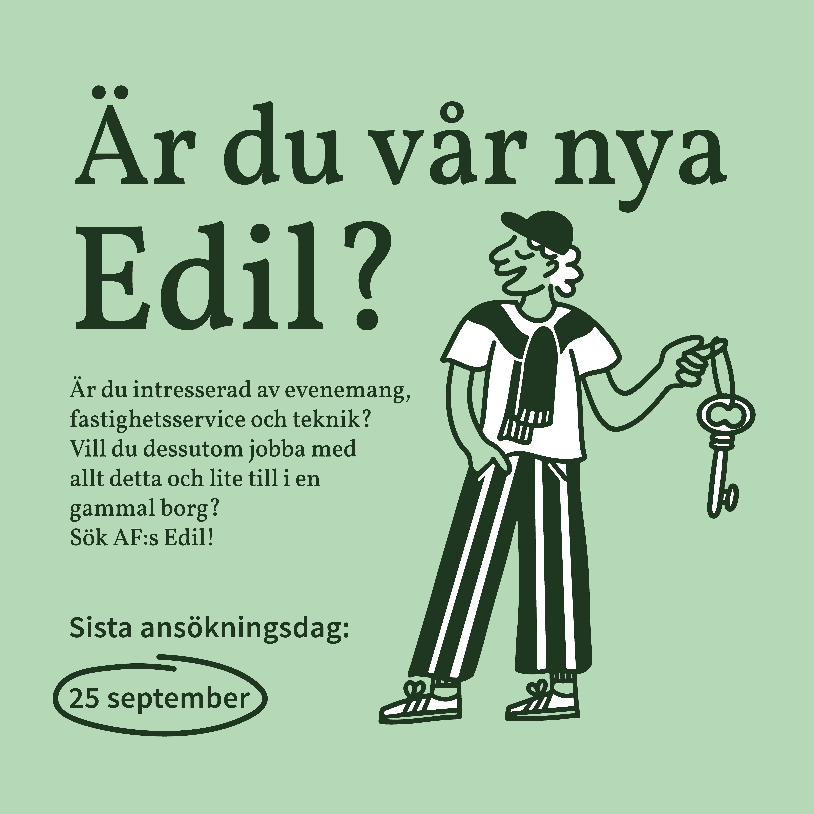
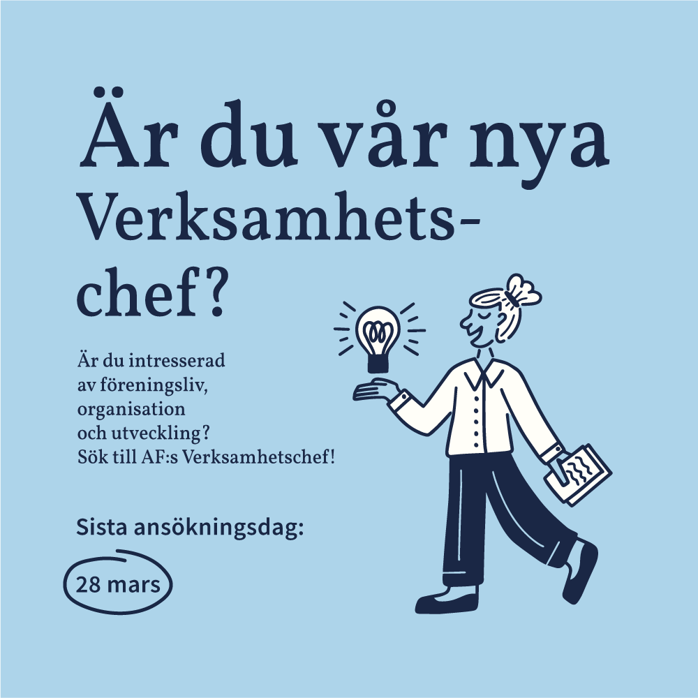
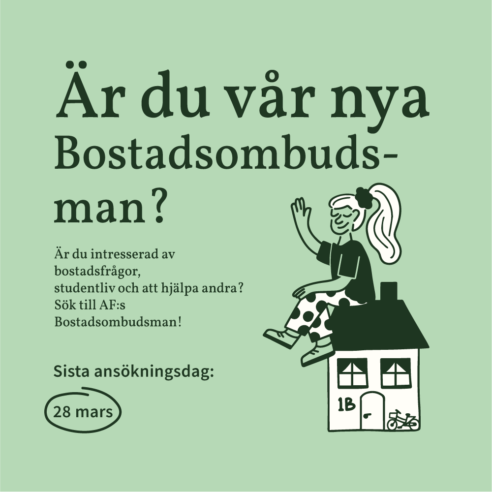

Grafisk design, Illustration · Akademiska Föreningen
Postutlysning
Grafiskt material framtaget för postutlysning av Akademiska Föreningens heltidarposter.
Min roll
Grafisk design, illustration
Uppdragsgivare
Akademiska Föreningen
År
2024
Om projektet
Jag tog fram det grafiska materialet för Akademiska Föreningens utlysning av föreningens heltidarposter. Uppdraget var att skapa en tydlig och visuellt sammanhållen kommunikation som presenterade de olika posterna och samtidigt väckte intresse hos studenter att söka.
Jag ansvarade för det visuella uttrycket och utformningen av materialet, från idé och layout till färdig produktion för digital publicering.



